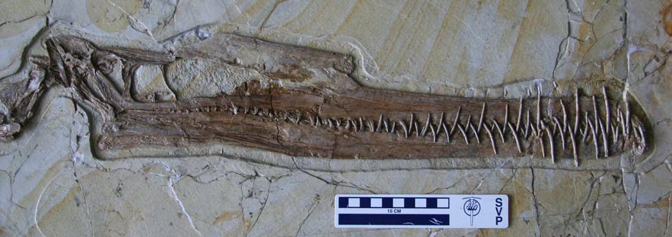
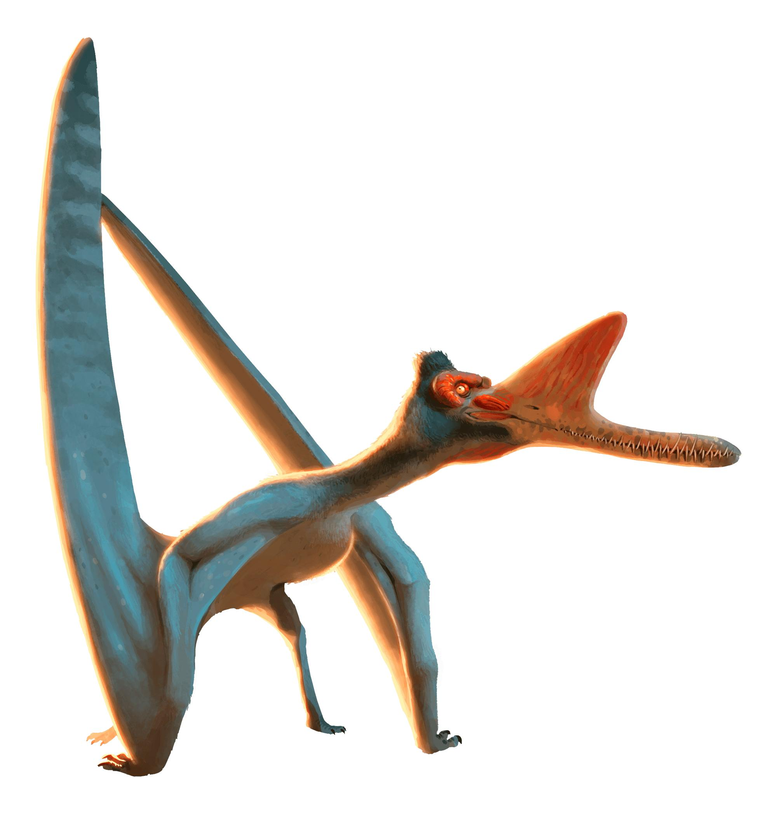
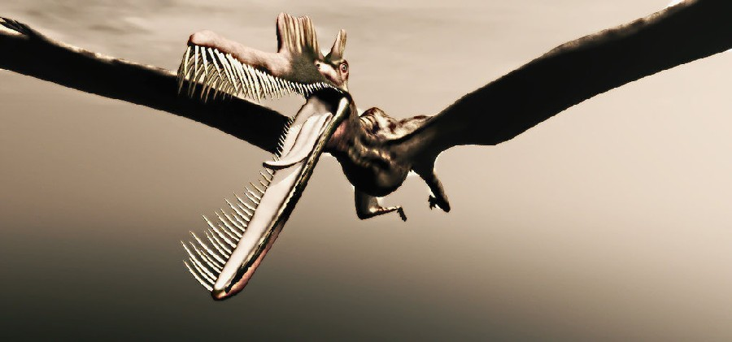
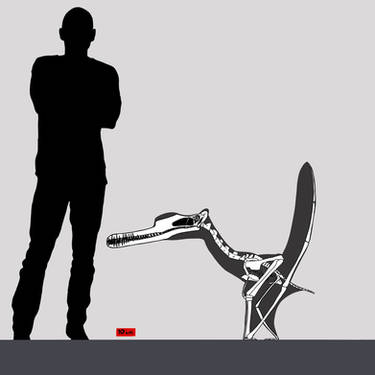

Română
Zhenyuanopterus sau Aripa lui Zhenyuan, numit de către Lu Jungchang, era un dinozaur carnivor/piscivor, întâlnit în China, Provincia Liaoning în perioada Cretacicului timpuriu. Anvergura aripilor era de în jur de 4 metri, fosilele care se regăsesc fiind foarte bine conservate.
English
Zhenyuanopterus or Zhenyuan's Wing, named by Lu Jungchang, was a carnivorous/piscivorous dinosaur found in China, Liaoning Province during the Early Cretaceous. The wingspan was around 4 meters, the fossils found being very well preserved.